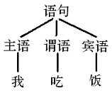
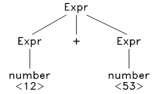
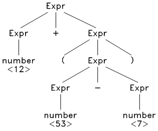
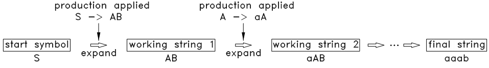
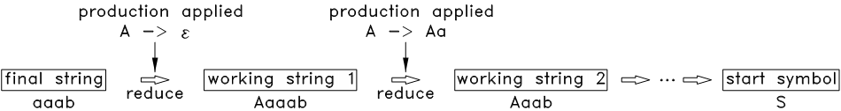

第09章 上下文无关语法及分析¶
词法分析后，源文件的字符流被分割为 token 流了，接下来就开始进行语法分析，分析出源程序的语法结构，将线性的 token 流转化为树状结构，为后续的语义分析和代码生成做准备。本章介绍什么是语法，如何用语法来描述语言，以及语法分析的任务、基本方法和思路。
9.1 上下文无关语法¶
在第 7 章中，对程序、语言和编译做了正式的定义，一个程序就是一个句子（字符串），语言就是一个句子集合。那么如何准确的表示这个集合？用枚举法？显然不行，这个集合可能包含了无限多个元素。用特性法？那应该如何精确的描述这个集合的特性？
编译的第一个任务就是判断给定的句子是否属于这个集合，因此必须提供一个精确的、可操作的描述来表示这集合。如 ” C 语言就是所有能编译成功的源程序的集合” 这样的描述是无法操作的，对任意的源程序显然无法用这个描述来判断其是否属于 C 语言这个句子集合。
在第 7 章中介绍了正则语言和正则表达式，一个正则表达式可以用来表示一个句子集合（正则语言），且每个正则表达式都可以构造出有限状态自动机来判断任意的句子是否属于这个句子集合。因此，用正则表达式来表示正则语言是精确的、可操作的。
那么，可以用正则表达式来表示程序语言（比如 C 语言）所代表的句子集合吗？
很遗憾，答案是否定的。正则表达式毕竟太简单了，无法来表示程序语言这样复杂级别的句子集合。
为了表示程序语言的句子集合，需要采用表达能力更强大的工具 —— 上下文无关语法（context-free grammar） 。
下面以一个简单的例子来说明什么是上下文无关语法，假设有一种非常非常原始的语言，我们把它成为 X 语言，它的句子只有： 主语 谓语 宾语 这样一种结构， 主语 中只有 我、 你、 他 三个词， 谓语 中只有 吃 一个词， 宾语 中只有 饭、菜 两个词。我们把它的语法写出下面这样的形式：
语句 -> 主语 谓语 宾语
主语 -> 我
主语 -> 你
主语 -> 他
谓语 -> 吃
宾语 -> 饭
宾语 -> 菜
可以看出， X 语言总共只有 6 个句子： { 我吃饭, 我吃菜, ..., 他吃菜 }。也就是说，我们可以用上面这个语法来表示 X 语言这个集合，我们可以从第一行的 “语句 -> 主语 谓语 宾语” 开始，分别将主、谓、宾替换成可用的词，从而将所有满足语法的句子都推导出来。对于任意一个句子，我们也可以将句子和此语法来对比，判断它是否属于满足 X 语言。
上面这个语法中的每一行形如 “语句 -> 主语 谓语 宾语” 的式子称为 产生式（production） 。
产生式左侧的符号（语句、主语、谓语和宾语）称为 非终结符（nonterminal） ，代表可以继续扩展或产生的符号，也就是说，当在某条产生式的右边遇到了此非终结符的时候，总是可以用本产生式的右边来替换这个非终结符。
而 “我、你、他、吃、饭、菜” 这些符号是 X 语言中的词，无法再产生新的符号了，称为 终结符（terminal） 。终结符只能出现在产生式的右边，非终结符则左边和右边都可以出现。
上述产生式中有一个特别的非终结符： “语句” ， X 语言中的所有句子都以它为起点产生，这个符号被称为 起始符号（start symbol）。
通常把同一个非终结符的产生式写在一起，用 “|” 隔开，如下：
语句 -> 主语 谓语 宾语
主语 -> 我 | 你 | 他
谓语 -> 吃
宾语 -> 饭 | 菜
注意，上面的第二行中有 3 个产生式，第四行中有 2 个产生式。
一个上下文无关语法 G 就是由一个终结符集合 T ，一个非终结符集合 N （ N 和 T 不相交），一个产生式集合 P ，以及一个起始符号 S （S ∈ N）组成。由语法 G 推导（产生）出来的所有的句子的集合称为 G 语言。因此一个语法可以代表一个句子集合，也就是一个语言。
终结符和非终结符统称为符号，符号一般用字母 A, B, X, Y, a, b 表示，符号串一般用小写字母 u, v 表示。产生式的形式为 A -> u ，其中 A 为非终结符， u 为一个符号串。
下面再来看一个例子：
S –> AB
A –> aA | ε
B –> b | bB
这里面的第二行中的 ε 表示一个空句子，表示 A 可以用一个空句子来代替。
经过观察可知，这个语法所能推导出的所有句子的集合为：
A : { ε, a, aa, aaa, ... }
B : { b, bb, bbb, ... }
S : { b, bb, bbb, ..., ab, abb, ..., aab, aabb, ... }
因此 S 相当于正则表达式 a*b+ 。
再来看一个稍微复杂的例子：
Expr -> Expr op Expr | (Expr) | number
op -> + - * /
其中的 number 是词法分析得到的一个 token ，它在词法分析中用正则表达式 [0-9]+ 表示。
经过观察可知，此语法可以推导出所有的整数算术表达式：
Expr : { 123, 25 + 24, 78 - 34, 12 * ( 23 + 9 ), ... }
可以看出，上下文无关文法可以采用递归的形式推导，比正则表达式的表达能力要强大的多。
下面给出上下文本无关语法及相关术语的正式定义：
终结符集合 T （terminal set） ： 一个有限集合，其元素称为 终结符（terminal） 。
非终结符集合 N （non-terminal set) ： 一个有限集合，与 T 无公共元素，其元素称为 非终结符（non-terminal） 。
符号集合 V （alphabet） ： T 和 N 的并集，其元素称为 符号（symbol） 。因此终结符和非终结符都是符号。符号可用字母：A, B, C, X, Y, Z, a, b, c 等表示。
符号串（a string of symbols） ： 一串符号，如 X1 X2 ... Xn 。只有终结符的符号串称为 句子（sentence）。 空串 （不含任何符号）也是一个符号串，用 ε 表示。符号串一般用小写字母 u, v, w 表示。
产生式（production） ： 一个描述符号串如何转换的规则。对于上下文本无关语法，其固定形式为： A -> u ，其中 A 为非终结符， u 为一个符号串。
产生式集合 P （production set） ： 一个由有限个产生式组成的集合。
展开（expand） ： 一个动作：将一个产生式 A -> u 应用到一个含有 A 的符号串 vAw 上，用 u 代替该符号串中的 A ，得到一个新的符号串 vuw 。
折叠（reduce） ： 一个动作：将一个产生式 A -> u 应用到一个含有 u 的符号串 vuw 上，用 A 代替该符号串中的 u ，得到一个新的符号串 vAw 。
起始符号 S （start symbol） ： N 中的一个特定的元素。
推导（derivate） ： 一个过程：从一个符号串 u 开始，应用一系列的产生式，展开到另一个的符号串 v。若 v 可以由 u 推导得到，则可写成： u => v 。
上下文本无关语法 G （context-free grammar, CFG） ： 一个 4 元组： (T, N, P, S) ，其中 T 为终结符集合， N 为非终结符集合， P 为产生式集合， S 为起始符号。一个句子如果能从语法 G 的 S 推导得到，可以直接称此句子由语法 G 推导得到，也可称此句子符合这个语法，或者说此句子属于 G 语言。 G 语言（ G language） 就是语法 G 推导出来的所有句子的集合，有时也用 G 代表这个集合。
解析（parse） ： 也称为分析，是一个过程：给定一个句子 s 和语法 G ，判断 s 是否属于 G ，如果是，则找出从起始符号推导得到 s 的全过程。推导过程中的任何符号串（包括起始符号和最终的句子）都称为 中间句子（working string） 。
为什么要把这种语法称为上下文本无关语法呢？这是由其产生式的固定形式 A -> u 所决定的，事实上，还有所谓的上下文有关语法，其产生式的形式为 v A w -> v u w ，也就是说只有 A 的上下文分别为 v 和 w 时，才能应用该产生式。上下文本无关语法其实是上下文有关语法中的一种特例，也就是 v 和 w 分别为空串时的特例。
9.2 分析树和抽象语法树¶
语法分析不但要判断给定的句子是否符合语法结构，而且还要分析出该句子符合哪些结构，也就是说，要分析出这个句子是怎么从起始符号开始产生出来的，并根据产生过程生成语法树。如，对于 “我吃饭” 这句话，只有我们知道了 主语、谓语和宾语 分别对应的是那个词，我们才能真正理解这句话的含义。
{kind=link}
图9.1 语法树示意图
以上一节表达式语法为例，给定一个句子 12 + 53 ，经过观察，发现此句子可以按以下方式被推导出来：
Expr ==> Expr + Expr ==> number + Expr ==> number + number ==> 12 + 53
以上推导过程可以用分析树来表示：
{kind=link}
图9.2 分析树示意图a
再看一个稍微长的句子： 12 + ( 53 - 7 ) ，其分析树如下：
{kind=link}
图9.3 分析树示意图b
可以去掉此分析树中一些多余的节点，并进一步浓缩，得到抽象语法树：

图9.4 抽象语法树示意图a
对于这种树状结构，可以采用递归的方式加以分析，从而生成目标代码。
再看一个句子： 12 + 53 * 7 ，这时候问题来了，我们发现它可以由两种不同的方式推导出来：

图9.5 抽象语法树示意图b
这就是语法的歧义性，所谓 歧义（ambiguity），就是指对于一个符合语法结构的句子，它可以由两种不同的方式被推导出来。如果一个语法中，任何一个句子的推导方式都是唯一的，那这个语法就被称为是 没有歧义 的。显然，程序语言必须是没有歧义的，对于上面的表达式，我们肯定希望它只能按后一种方式被推导。
消除歧义的方法之一是改写语法，将有歧义的产生式改写成无歧义的，这种改写非常困难，而且改写后的产生式往往和原产生式相差很大，可读性非常差。另一种方法就是引入 优先级 ，不需要改写语法，当推导过程中出现歧义的时候（也就是出现两种不同的推导方式的时候），利用符号的优先级来选择需要的推导方式，这种方法将在第 12 章中介绍。
9.3 分析方法简介¶
从上一节可以看出，对于一个给定的语法 G ，从中推导出一个任意的句子是比较简单和直接的，但需要推导出指定的句子（或者说给定一个句子、要分析出它是怎么从起始符号开始推导得到的）就没那么简单了，这就是语法分析的任务。分析可以采用 自顶向下分析 或 自底向上分析 两种方法，以下先简单介绍这两种方法的思路，之后在下一章和下下一章分别详细介绍它们的具体实现步骤。
（1）自顶向下分析
自顶向下分析就是从起始符号开始，不断的挑选出合适的产生式，将中间句子中的非终结符的展开，最终展开到给定的句子。
以上一节第二个语法为例：
S –> AB
A –> aA | ε
B –> b | bB
假设要分析的句子为： aaab ，首先从起始符号 S 开始。
第 1 步，起始符号只有一个产生式： S -> AB ，所以只能选择这个产生式，用这个产生式的右边代替 S ，于是得到一个中间句子 AB ，将选择的产生式和得到中间句子（working-string）写成列表的形式，如下：
| Working-string | Production | |
|---|---|---|
| S | S –> AB | |
| AB |
第 2 步，从 AB 开始，首先展开 A ， A 有两个产生式： A -> aA, A -> ε ，我们对比一下最终句子 aaab 和 目前得到的中间句子 AB ，发现只能选择 A -> aA ，否则将无法推导出 aaab 。因此选择这个产生式，将其右边替换掉中间句子 AB 中的 A ，于是得到中间句子 aAB ：
| Working-string | Production | |
|---|---|---|
| S | S –> AB | |
| AB | A –> aA | |
| aAB |
继续尝试展开 aAB 中的 A ，再次对比发现，还是只能选择产生式 A -> aA ，得到：
| Working-string | Production | |
|---|---|---|
| S | S –> AB | |
| AB | A –> aA | |
| aAB | A –> aA | |
| aaAB |
再次应用产生式 A -> aA ，得到：
| Working-string | Production | |
|---|---|---|
| S | S –> AB | |
| AB | A –> aA | |
| aAB | A –> aA | |
| aaAB | A –> aA | |
| aaaAB |
到了这里，可以发现只能使用 A -> ε （否则无法得到 aaab ），应用此产生式后得到：
| Working-string | Production | |
|---|---|---|
| S | S –> AB | |
| AB | A –> aA | |
| aAB | A –> aA | |
| aaAB | A –> aA | |
| aaaAB | A -> ε | |
| aaaB |
第 3 步，从 aaaB 开始，按上面同样的原则尝试展开 B ，最终得到：
| Working-string | Production | |
|---|---|---|
| S | S –> AB | |
| AB | A –> aA | |
| aAB | A –> aA | |
| aaAB | A –> aA | |
| aaaAB | A -> ε | |
| aaaB | B -> b | |
| aaab | ACCEPT |
（2）自底向上分析
自底向上分析的顺序和自顶向下分析的顺序刚好相反，从给定的句子开始，不断的挑选出合适的产生式，将中间句子中的子串折叠为非终结符，最终折叠到起始符号。
还是以上一节第二个语法为例，分析的句子还是： aaab 。但先将这个语法改写一下：
S –> AB
A –> Aa | ε
B –> b | bB
首先从最终句子 aaab 开始。从左边第一个字符 a 开始，对比语法中的所有产生式，发现没有一个产生式的右边可以完全匹配。但经过仔细观察和思考发现：可以尝试在 aaab 的最前面插入一个空句子 ε ，接下来可以应用 A -> ε ，之后再应用 A -> Aa， ... 。因此先插入空句子，得到中间句子 εaaab ，如下：
| Working-string | Production | |
|---|---|---|
| aaab | insert(ε) | |
| εaaab |
此时，中间句子的最左边 ε 可以和 A -> ε 匹配了，因此，我们应用这个产生式，将 ε 折叠为 A ，得到 Aaaab ：
| Working-string | Production | |
|---|---|---|
| aaab | insert(ε) | |
| εaaab | A -> ε | |
| Aaaab |
再观察中间句子 Aaaab ，发现它的最前面的 Aa 可以和 A -> Aa 匹配上，且只能和这个产生式匹配上，因此应用此产生式，将 Aa 折叠为 A ，得到 Aaab ：
| Working-string | Production | |
|---|---|---|
| aaab | insert(ε) | |
| εaaab | A -> ε | |
| Aaaab | A -> Aa | |
| Aaab |
按以上原则，一步一步的将中间句子的子串折叠为非终结符，最终折叠到起始符号 S ，过程如下：
| Working-string | Production | |
|---|---|---|
| aaab | insert(ε) | |
| εaaab | A -> ε | |
| Aaaab | A -> Aa | |
| Aaab | A -> Aa | |
| Aab | A -> Aa | |
| Ab | B -> b | |
| AB | S -> AB | |
| S | ACCEPT |
（3）分析流程图
两种分析方法的分析流程见下面两个图：
{kind=link}
图9.6 自顶向下分析法流程图
{kind=link}
图9.7 自底向上分析法流程图
（4）分析过程的回溯和歧义
上面的例子其实是一个精心挑选出来的例子，在推导的过程中，每一步都只有唯一的一个产生式可以应用，即每一步都可以排除掉其他所有的产生式。但在实际分析时，在中间过程中可能会遇到：
- 所有产生式都不可应用
- 有多个产生式可以应用
两种情况。
对于第二种情况，需要采用回溯，先试探性的选择一个产生式应用，若一直推导至最终句子（或起始符号），则表明此产生式是可用的，若推导下去遇到第一种情况，则回溯到此处，选择另一个产生式。如果此处所有产生式都尝试过了全部都遇到第一种情况，则表明最终句子不符合语法结构。如果此处有多条产生式可以推导至最终句子（或起始符号），则表明语法有歧义。
回溯分析一般都非常慢，因此一般通过精心构造语法来避免回溯。
（5） 分析的局部性约束
上面的例子中，我们可以看到整个句子 aaab ，所以在挑选产生式时可以利用整个句子的信息，在实际编译过程中，实际的句子（源程序）是一个很长的符号流，分析的每一步中其实只能看到刚刚读入的一到两个符号，后面很长的一串符号都没读入进来，都看不到，因此只能利用目前已有的信息来进行判断，这就是分析的局部性约束。
（6） 左递归和右递归
左递归（left recursive） 是指形如 A -> A u 这样的规则，右递归（left recursive） 则是指形如 A -> u A 这样的规则。
为避免回溯，不宜将自顶向下分析法应用于含左递归的语法 ，这是由此方法的分析顺序决定的。
第 9 章完